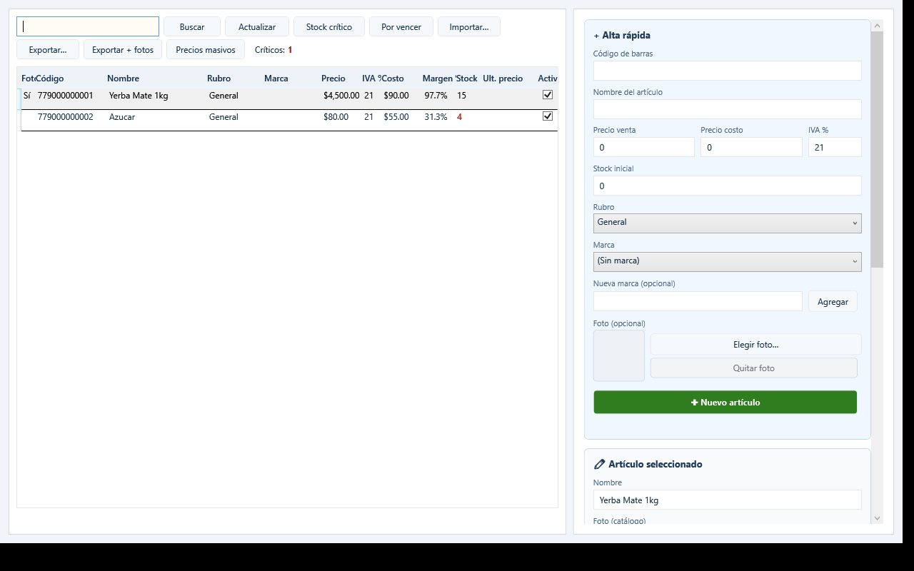
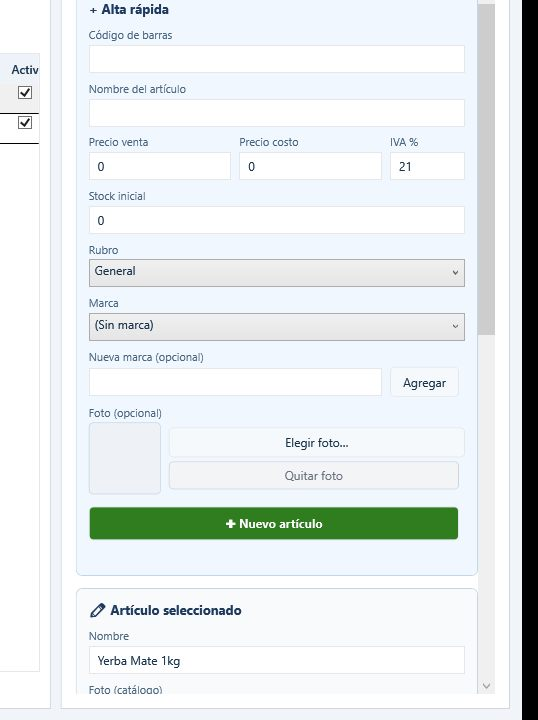
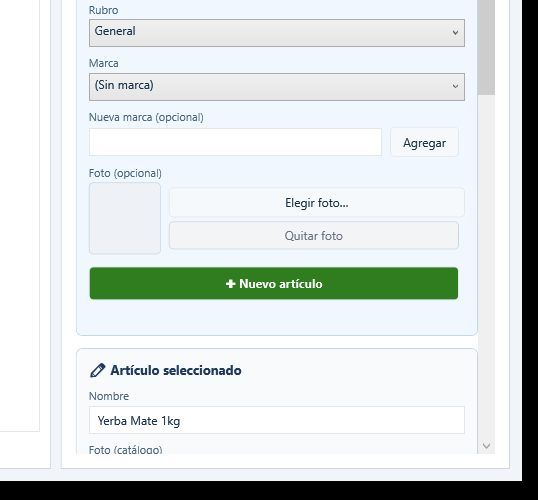
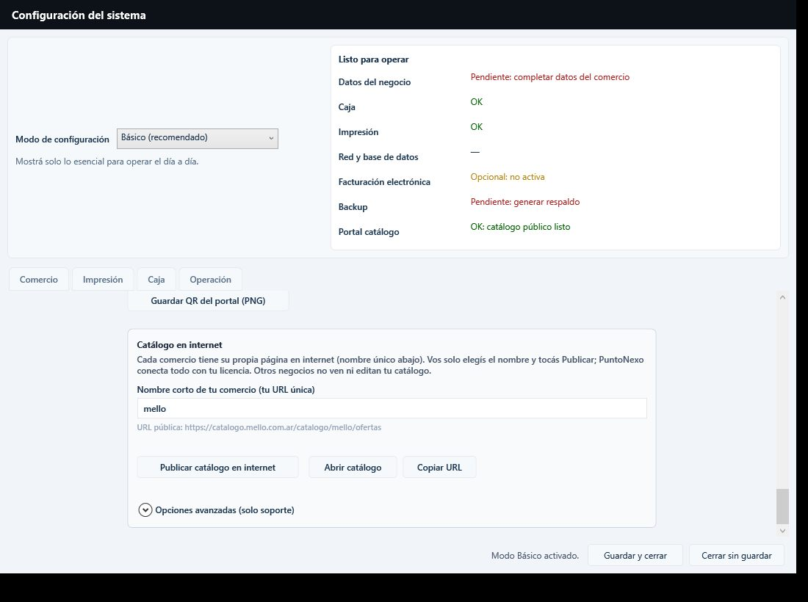
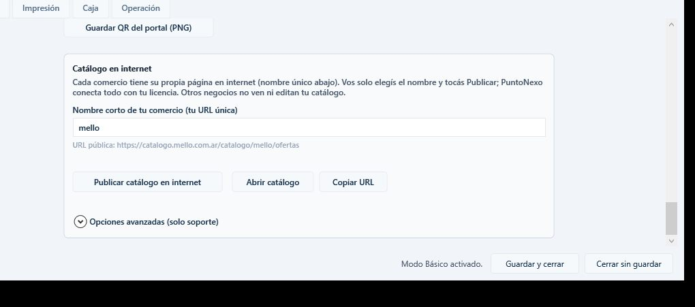
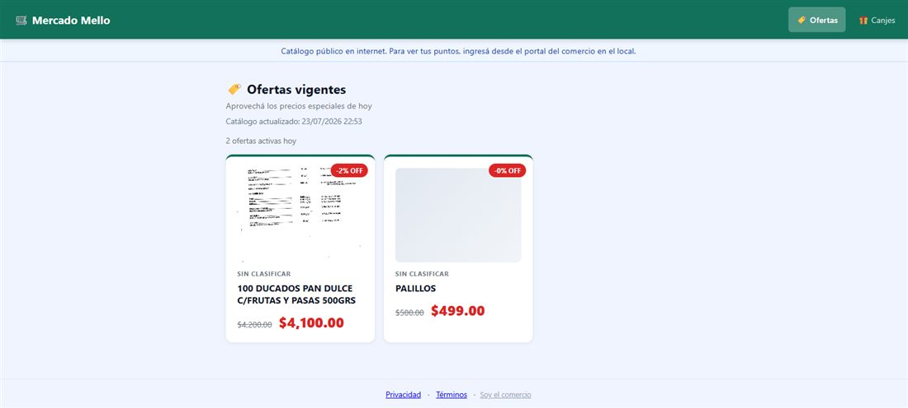

Tutorial para el comercio · capturas reales
Fotos de productos y catálogo online
Cómo cargar la foto de un artículo, marcarlo como oferta y publicarlo en internet para que tus clientes lo vean desde el celular.
Antes de empezar
- Tenés PuntoNexo instalado y una licencia activa.
- La PC tiene internet al momento de publicar (para subir fotos y actualizar la web).
- No hace falta configurar servidores, R2 ni claves técnicas: se usa el token de tu licencia.
Qué se publica: el catálogo en internet muestra las ofertas vigentes
(artículos con “Publicar como oferta” y precio promocional). No publica todo el stock de golpe.
Si cambiás precios u ofertas, tenés que volver a tocar Publicar catálogo en internet
para que la web se actualice.
Índice
1 Abrir Artículos y elegir la foto
- En el menú lateral entrá a ARTÍCULOS → Artículos.
- En la grilla, seleccioná el producto que querés mostrar en la web (o crealo con Alta rápida).
- A la derecha, en el panel Artículo seleccionado, buscá la sección Foto (catálogo).
- Tocá Elegir foto… y seleccioná una imagen de tu PC o del celular (si la tenés copiada).
- Guardá los cambios del artículo.

Pantalla real de Artículos: a la izquierda el listado; a la derecha el alta rápida y el detalle del artículo seleccionado.

En alta rápida la foto es opcional. En el artículo seleccionado aparece como Foto (catálogo).
Formatos y tamaño
- Sirven JPG, PNG o BMP.
- El archivo original puede pesar hasta ~12 MB; PuntoNexo lo achica solo (máx. ~1200 px y un JPG liviano).
- Conviene una foto clara del frente del producto, con buena luz. No hace falta diseño profesional.
2 Marcar el producto como oferta
La foto sola no alcanza: para que salga en la web tenés que publicarlo como oferta.
- Con el artículo seleccionado, bajá hasta el bloque Oferta en catálogo web (fondo naranja claro).
- Tildá Publicar como oferta.
- Completá el precio promocional (tiene que ser menor al precio de venta).
- Opcional: poné Vigencia desde / hasta. Si no ponés fechas, vale mientras esté tildado.
- Guardá el artículo.

El panel derecho concentra nombre, foto de catálogo, precios y (más abajo) la oferta web.
Sin “Publicar como oferta”, el producto no aparece en la página de ofertas aunque tenga foto.
3 Publicar el catálogo
- Andá a Configuración (menú SISTEMA).
- Buscá la sección Catálogo en internet.
- Revisá el nombre corto de tu comercio: es la parte final de tu URL
(ejemplo:
mello → https://catalogo.mello.com.ar/catalogo/mello/ofertas).
- Tocá Publicar catálogo en internet.
- Esperá el mensaje de confirmación. Te indica cuántas ofertas salieron
con foto y sin foto. Si alguna foto no pudo subirse, vas a ver un aviso (toast), pero la publicación no se cancela.

Configuración real: arriba el estado “Listo para operar”; abajo el bloque de catálogo online.

Botones: Publicar, Abrir catálogo y Copiar URL.
La primera vez, si el sistema te pide sincronizar la licencia, andá a
Sistema → Licencia → Sincronizar y volvé a publicar.
4 Abrir, verificar y compartir
- Tocá Abrir catálogo (o pegá la URL en el navegador del celular).
- Verificá que se vean las ofertas y las fotos. Si un artículo no tiene foto, la web muestra un placeholder gris.
- Usá Copiar URL y mandala por WhatsApp, Instagram o un cartel.
- Opcional: en Configuración podés Guardar QR del portal (PNG) para imprimirlo.

Ejemplo real: catálogo público de Mercado Mello con ofertas vigentes (una con foto y otra sin foto / placeholder).
Consejos y problemas frecuentes
Buenas prácticas
- Publicá primero las ofertas que más querés mostrar (2–10 alcanzan para arrancar).
- Si una oferta vence, destildá “Publicar como oferta” o poné fecha hasta, y volvé a publicar.
- Hacé un respaldo de la app de vez en cuando: también genera un ZIP de fotos.
Si algo falla
- No publica (401): sincronizá la licencia e intentá de nuevo.
- “X sin foto”: abrí el artículo, elegí la foto otra vez, guardá y publicá.
- La web vieja: faltó volver a tocar Publicar después del cambio.
- Sin internet: podés cargar fotos offline; la subida ocurre al publicar o al guardar con conexión.
Checklist
- Producto con foto en Artículos
- “Publicar como oferta” + precio promo
- Licencia activa + internet
- Botón Publicar tocado
- URL abierta y verificada en el celular